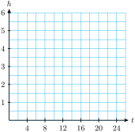

Section 6.3 Graphs of the Circular Functions
We can graph the circular functions \(y =\sin (t),~ y = \cos (t),\) and \(y = \tan (t) ~\) just as we graphed trigonometric functions of angles in degrees. The only difference is that we scale the horizontal axis in radians.
Subsection The Sine and Cosine Functions
Consider the graph shown below.
You can probably recognize this graph as one cycle of \(y = \sin (t)\text{.}\) For example, you can see that the graph completes one cycle at \(t = 2\pi\) radians, or approximately 6.28. It reaches its maximum value, \(y = 1\text{,}\) at \(t = \dfrac{\pi}{2}\text{,}\) or approximately 1.57. You should also notice that \(y = 0\) at \(t = \pi\text{,}\) approximately 3.14.
Instead of scaling the horizontal axis with integers, we often use multiples of \(\pi\text{.}\) Using such a scale, we can show the exact location of the intercepts of the graph, and of its high and low points.
Example 6.29.
Graph one cycle of \(y = \sin (t)\text{,}\) and scale the horizontal axis in multiples of \(\pi\text{.}\)
Solution.
We start by making a table of values for \(\sin (t)\text{,}\) where \(t\) is in radians. We’ll use the special values of \(t\text{,}\) because we know the sines of those values.
| \(t\) |
\(0\) |
\(\dfrac{\pi}{6}\) |
\(\dfrac{\pi}{4}\) |
\(\dfrac{\pi}{3}\) |
\(\dfrac{\pi}{2}\) |
\(\dfrac{2\pi}{3}\) |
\(\dfrac{3\pi}{4}\) |
\(\dfrac{5\pi}{6}\) |
\(\pi\) |
| \(\sin (t)\) |
\(0\) |
\(0.500\) |
\(0.707\) |
\(0.866\) |
\(1.000\) |
\(0.866\) |
\(0.707\) |
\(0.500\) |
\(0\) |
In order to plot the points in the table, we scale the horizontal axis in multiples of \(\dfrac{\pi}{12}\text{.}\) (Note that the special values are all multiples of \(\dfrac{\pi}{12}\text{.}\) Thus, \(\dfrac{\pi}{6} = 2\left(\dfrac{\pi}{12}\right)\text{,}\) \(~ \dfrac{\pi}{4} = 3\left(\dfrac{\pi}{12}\right)\text{,}\) and so on.) The table lists values of \(\sin (t)\) in the first two quadrants; in quadrants three and four the sine values are negative.
| \(t\) |
\(\pi\) |
\(\dfrac{7\pi}{6}\) |
\(\dfrac{5\pi}{4}\) |
\(\dfrac{4\pi}{3}\) |
\(\dfrac{3\pi}{2}\) |
\(\dfrac{5\pi}{3}\) |
\(\dfrac{7\pi}{4}\) |
\(\dfrac{11\pi}{6}\) |
\(2\pi\) |
| \(\sin (t)\) |
\(0\) |
\(-0.500\) |
\(-0.707\) |
\(-0.866\) |
\(-1.000\) |
\(-0.866\) |
\(-0.707\) |
\(-0.500\) |
\(0\) |
The completed graph is shown below.
If we continued to plot points for values of \(t\) greater than \(2 \pi\) or less than 0, we would see the periodic behavior of the graph, as it repeats the same shape over each interval of length \(2 \pi\text{,}\) just as it does for periods of \(360\degree\) when the angles are measured in degrees.
Checkpoint 6.30.
-
Complete the table of values for \(y = \cos (t)\text{.}\)
| \(t\) |
\(0\) |
\(\dfrac{\pi}{6}\) |
\(\dfrac{\pi}{4}\) |
\(\dfrac{\pi}{3}\) |
\(\dfrac{\pi}{2}\) |
\(\dfrac{2\pi}{3}\) |
\(\dfrac{3\pi}{4}\) |
\(\dfrac{5\pi}{6}\) |
\(\pi\) |
| \(\cos (t)\) |
\(\hphantom{0000}\) |
\(\hphantom{0000}\) |
\(\hphantom{0000}\) |
\(\hphantom{0000}\) |
\(\hphantom{0000}\) |
\(\hphantom{0000}\) |
\(\hphantom{0000}\) |
\(\hphantom{0000}\) |
\(\hphantom{0000}\) |
| \(t\) |
\(\pi\) |
\(\dfrac{7\pi}{6}\) |
\(\dfrac{5\pi}{4}\) |
\(\dfrac{4\pi}{3}\) |
\(\dfrac{3\pi}{2}\) |
\(\dfrac{5\pi}{3}\) |
\(\dfrac{7\pi}{4}\) |
\(\dfrac{11\pi}{6}\) |
\(2\pi\) |
| \(\cos (t)\) |
\(\hphantom{0000}\) |
\(\hphantom{0000}\) |
\(\hphantom{0000}\) |
\(\hphantom{0000}\) |
\(\hphantom{0000}\) |
\(\hphantom{0000}\) |
\(\hphantom{0000}\) |
\(\hphantom{0000}\) |
\(\hphantom{0000}\) |
-
Graph one cycle of \(y = \cos (t)\text{,}\) and scale the horizontal axis in multiples of \(\pi\text{.}\) Use the grid below.
Answer.
| \(t\) |
\(0\) |
\(\dfrac{\pi}{6}\) |
\(\dfrac{\pi}{4}\) |
\(\dfrac{\pi}{3}\) |
\(\dfrac{\pi}{2}\) |
\(\dfrac{2\pi}{3}\) |
\(\dfrac{3\pi}{4}\) |
\(\dfrac{5\pi}{6}\) |
\(\pi\) |
| \(\cos (t)\) |
\(1\) |
\(\dfrac{\sqrt{3}}{2}\) |
\(\dfrac{1}{\sqrt{2}}\) |
\(\dfrac{1}{2}\) |
\(0\) |
\(\dfrac{-1}{2}\) |
\(\dfrac{-1}{\sqrt{2}}\) |
\(\dfrac{-\sqrt{3}}{2}\) |
\(-1\) |
| \(t\) |
\(\pi\) |
\(\dfrac{7\pi}{6}\) |
\(\dfrac{5\pi}{4}\) |
\(\dfrac{4\pi}{3}\) |
\(\dfrac{3\pi}{2}\) |
\(\dfrac{5\pi}{3}\) |
\(\dfrac{7\pi}{4}\) |
\(\dfrac{11\pi}{6}\) |
\(2\pi\) |
| \(\cos (t)\) |
\(-1\) |
\(-\dfrac{\sqrt{3}}{2}\) |
\(-\dfrac{1}{\sqrt{2}}\) |
\(-\dfrac{1}{2}\) |
\(0\) |
\(\dfrac{1}{2}\) |
\(\dfrac{1}{\sqrt{2}}\) |
\(\dfrac{\sqrt{3}}{2}\) |
\(1\) |
Activity 6.5. Graphs of Sine and Cosine.
We are going to graph \(f(t) = \sin (t)\) and \(g(t) = \cos (t)\) from their definitions. The unit circle \(x^2 + y^2 = 1\) at the left of each grid is marked off in radians. (Each tick mark is \(0.1\) radian.) The horizontal \(t\)-axis of each grid is also marked in radians.
Choose a value of \(t\) along the horizontal axis of the \(f(t) = \sin (t)\) grid. This value of \(t\) represents an angle in radians.
Now look at the unit circle and find the point \(P\) designated by that same angle in radians.
Measure the vertical (signed) distance that gives the \(y\)-coordinate of point \(P\text{.}\)
At the value of \(t\) you chose in step 1, lightly draw a vertical line segment the same length as the \(y\)-coordinate of \(P\text{.}\) Put a dot at the top (or bottom) of the line segment.
Repeat for some more values of \(t\text{.}\) Connect the dots to see the graph of \(f(t) = \sin (t)\text{.}\)
Choose a value of \(t\) along the horizontal axis of the \(g(t) = \cos (t)\) grid. This value of \(t\) represents an angle in radians.
Now look at the unit circle and find the point \(P\) designated by that same angle in radians.
Measure the horizontal (signed) distance that gives the \(x\)-coordinate of point \(P\text{.}\)
At the value of \(t\) you chose in step 1, lightly draw a vertical line segment the same length as the \(x\)-coordinate of \(P\text{.}\) Put a dot at the top (or bottom) of the line segment.
Repeat for some more values of \(t\text{.}\) Connect the dots to see the graph of \(g(t) = \cos (t)\text{.}\)
Subsection The Tangent Function
Finally, we consider the graph of the tangent function. Once again, the only difference between this new graph and our old version of the tangent graph in degrees is that the horizontal axis is scaled in radians.
Example 6.32.
Graph the tangent function, \(y = \tan (t)\text{,}\) where \(t\) is measured in radians.
Solution.
We begin by making a table of values for the tangent function. We choose the special values for \(t\) between \(0\) and \(\pi\text{.}\)
| \(t\) |
\(0\) |
\(\dfrac{\pi}{6}\) |
\(\dfrac{\pi}{4}\) |
\(\dfrac{\pi}{3}\) |
\(\dfrac{\pi}{2}\) |
\(\dfrac{2\pi}{3}\) |
\(\dfrac{3\pi}{4}\) |
\(\dfrac{5\pi}{6}\) |
\(\pi\) |
| \(\tan (t)\) |
\(0\) |
\(0.577\) |
\(1\) |
\(1.732\) |
\(---\) |
\(-1.732\) |
\(-1\) |
\(-0.577\) |
\(0\) |
We plot the points and connect them with smooth curves, remembering that \(\tan \left(\dfrac{\pi}{2}\right)\) is undefined. The graph repeats for values of \(t\) between \(\pi\) and \(2\pi\text{,}\) and we will include \(t\)-values outside the table in order to show three periods.
While the graph in degrees had vertical asymptotes at \(\theta = \pm 90\degree\) and \(\theta = 270\degree\text{,}\) this graph has vertical asymptotes at \(t = \pm\dfrac{\pi}{2}\) and \(t = \dfrac{3\pi}{2}\text{.}\) The figure at right shows the graph of \(y = \tan (t)\) for \(\dfrac{-\pi}{2} \le t \le \dfrac{5\pi}{2}\text{.}\)
Checkpoint 6.33.
Sketch a graph of the tangent function \(y =\tan (t)\) and scale the horizontal axis in integers, as shown below. Label the \(t\)-intercepts and the vertical asymptotes with their coordinates.
Subsection Solving Equations
We can use the graphs of the circular functions find solutions to trigonometric equations.
Example 6.34.
Use a graph to find all solutions of \(\cos (t) = -0.62\) between \(0\) and \(2\pi\text{.}\)
Solution.
The figure shows a graph of \(y = \cos (t)\text{,}\) with \(t\) in radians, and the horizontal line \(y = -0.62\text{.}\) The solutions of the equation are the \(t\)-coordinates of the intersection points, and these appear to be about \(t = 2.25\) and slightly over \(4.0\text{,}\) perhaps \(4.05\text{.}\) You can check that these values roughly satisfy the equation; it is difficult to read the graph with any greater accuracy.
Checkpoint 6.35.
Use a graph to find the two angles between \(0\) and \(2\pi\) that satisfy \(\sin (t) = -0.85\text{.}\)
Answer.
Approximately 4.14 and 5.25
Activity 6.6. Solving Equations.
Use the graph of \(y=\sin (t)\) to estimate two solutions of the equation \(\sin (t) = 0.65\text{.}\) Show your solutions on the graph.
Use the unit circle to estimate two solutions of the equation \(\sin (t) = 0.65\text{.}\) Show your solutions on the circle.
-
Use the graph of \(y=\sin (t)\) to estimate two solutions of the equation \(\sin (t) = -0.2\text{.}\) Show your solutions on the graph.
Use the unit circle to estimate two solutions of the equation \(\sin (t) = -0.2\text{.}\) Show your solutions on the circle.
Use the graph of \(y=\cos (t)\) to estimate two solutions of the equation \(\cos (t) = 0.15\text{.}\) Show your solutions on the graph.
Use the unit circle to estimate two solutions of the equation \(\cos (t) = 0.15\text{.}\) Show your solutions on the circle.
Use the graph of \(y=\cos (t)\) to estimate two solutions of the equation \(\cos (t) = -0.4\text{.}\) Show your solutions on the graph.
Use the unit circle to estimate two solutions of the equation \(\cos (t) = -0.4\text{.}\) Show your solutions on the circle.
We can also solve equations algebraically, using a calculator or computer to obtain more accurate values for the solutions.
Example 6.36.
Solve the equation \(~~\cos (t) = -0.62~~\) algebraically, for \(0 \le t \le 2\pi\text{.}\)
Find all solutions of the equation.
Solution.
-
The cosine is negative in the second and third quadrants, so we expect to find our answers between \(t = 1.57\) and \(t = 4.71\text{.}\) We use a calculator to find one of the angles:
\begin{equation*}
\cos^{-1}~ (-0.62) = 2.23953903
\end{equation*}
Rounded to hundredths, the second quadrant angle is \(t_1 = 2.24\) radans. To find the other angle, we first find the reference angle for \(t_1\text{:}\)
\begin{equation*}
\text{reference angle} = \pi - t_1 = 0.90
\end{equation*}
The third quadrant angle with the same reference angle is
\begin{equation*}
t_2 = \pi + 0.90 = 4.04
\end{equation*}
Thus, the two solutions are \(t_1 = 2.24\) and \(t_2 = 4.04\) radians, as shown in the figure.
All angles coterminal with \(t_1\) and \(t_2 \) are also solutions of the equation \(~~\cos t = -0.62~~\text{.}\) So adding or subtracting multiples of \(2 \pi\) to \(t_1\) and \(t_2 \) produces all the solutions. For example, \(2.24 + 2\pi = 8.52\) and \(4.04 - 2 \pi = -2.24\) are solutions. We write the solutions as \(t = 2.24 + 2 \pi k\) and \(t = 4.04 + 2 \pi k\text{,}\) where \(k\) is an integer.
Checkpoint 6.37.
Solve the equation \(~~\sin (t) = -0.85~~\) algebraically, for \(0 \le t \le 2\pi\text{.}\)
Find all solutions of the equation.
Answer.
\(4.16\) and \(5.27\)
\(4.16 + 2\pi k\) and \(5.27 + 2\pi k\)
We can find exact values for the solutions of equations involving the special values without using a calculator.
Example 6.38.
Find exact values for all the solutions of \(~~\tan (t) = 1\text{.}\)
Solution.
Because \(\tan \left(\dfrac{\pi}{4}\right) = 1\text{,}\) one of the solutions is \(t_1 = \dfrac{\pi}{4}\text{.}\) Remember that \(tan (t)\) repeats every \(\pi\) units. All other solutions of the equation \(\tan t = 1\) can be found by adding (or subtracting) multiples of \(\pi\) to these two solutions. We write the solutions as
\begin{equation*}
t = \dfrac{\pi}{4} + k \pi ~~ \text{where } k \text{ is an integer.}
\end{equation*}
Checkpoint 6.39.
Find exact values for all the solutions of \(~~\tan (t) = -\sqrt{3}\text{.}\)
Answer.
\(\dfrac{5\pi}{3} + k\pi\)
Subsection Modeling with Circular Functions
Now that we have defined trigonometric functions of real numbers, we can describe periodic phenomena as functions of time (or other variables besides angles).
For example, we began this chapter with a Ferris wheel of radius 100 feet that rotates once every 8 minutes. If you board the Ferris wheel at the bottom, your height is given as a function of time by
\begin{equation*}
h = f(t) = 100 - 100 \cos \left(\dfrac{\pi}{4}t\right)
\end{equation*}
where \(t\) is measured in minutes after boarding.
Thus, after \(\alert{2}\) minutes your height is
\begin{align*}
f(\alert{2}) \amp = 100 - 100\cos \left(\dfrac{\pi}{2}\right)\\
\amp = 100 - 100(0) = 100
\end{align*}
and after \(\alert{4}\) minutes your height is
\begin{align*}
f(\alert{4}) \amp = 100 - 100\cos (\pi)\\
\amp = 100 - 100(-1) = 200
\end{align*}
The graph of \(h = f(t)\) is shown above. From the graph, we see that the midline of the function is \(h = 100\text{,}\) its amplitude is 100, and its period is 8 (which is reasonable because the Ferris wheel rotates every 8 minutes). You can review period, midline, and amplitude of periodic functions in Section 4.3.
Example 6.40.
The formula
\begin{equation*}
D(t) = 12.25 - 5.25 \cos \left(\dfrac{\pi}{6}t\right)
\end{equation*}
gives the number of hours of daylight in Glasgow, Scotland, as a function of time, in months after January 1.
Graph the function on your calculator (make sure the calculator is set in radian mode).
State the midline, amplitude, and period of the graph.
How many hours of daylight does Glasgow enjoy on the longest day of the year?
In which months does Glasgow experience less than 8 hours of light per day?
Solution.
-
The graph is shown below.
The midline of the graph is \(D = 12.25\) hours, the amplitude is 5.25 hours, and the period is 12 months.
On the longest day of the year, there are \(12.25 + 5.25 = 17.5\) hours of daylight in Glasgow.
From the graph, we see that \(D(t) \lt 8\) for \(t\) between 0 and 2, or in January and February. \(D(t)\) is also less than 8 for a short time between \(t = 11\) and \(t = 12\text{,}\) at the end of December.
Checkpoint 6.41.
The pistons in an automobile engine move up and down in the cylinders. If \(t\) is in milliseconds, the distance from the top of the piston to the top of the cylinder is given in centimeters by
\begin{equation*}
D = 7 + 6\sin (4\pi t)
\end{equation*}
Graph the function on your calculator (make sure the calculator is set in radian mode).
State the midline, amplitude, and period of the graph.
Find the largest and the smallest clearance between the piston and the top of the cylinder.
Answer.
Midline: \(D = 7\text{,}\) amplitude: \(6\text{,}\) period: \(0.5\) millisec
Largest: 13 cm, smallest: 1 cm
Subsection Domain and Range
The domain of a function is the set of all possible input values. For many familiar functions, the domain is the set of all real numbers. In particular, the domain of any linear or quadratic function is the set of all real numbers.
Consider the functions \(f(x) = 2x + 5\) and \(g(x) = x^2 - 4\) shown below. We can use any real number as an input for either of these functions, and their graphs extend across the entire \(x\)-axis.
However, for other types of functions we must sometimes exclude certain values from the domain. For example, the domain of the function \(h(x) = \sqrt{x + 3}\) is restricted because we cannot take the square root of a negative number. We must have \(x + 3 \ge 0\text{,}\) so the domain of the function consists of all \(x \ge -3\text{.}\)
You can see the domain of a function in its graph; notice that there are no points on the graph of \(h(x) = \sqrt{x + 3}\) with \(x\)-coordinates less than \(-3\text{.}\)
The range of a function is the set of all output values for the function. We can also see the range of a function in its graph; it is the set of all \(y\)-values for points on the graph.
Because the graph of \(f(x) = 2x + 5\) extends infinitely in both directions, its range consists of all real numbers. There is an input value that will produce any output we want.
However, the range of \(g(x) = x^2 - 4\) consists of all \(y \ge -4\text{,}\) because there are no points on the graph with \(y\)-coordinate less than \(-4\text{.}\)
The range of \(h(x) = \sqrt{x + 3}\) consists of all \(y \ge 0\text{.}\)
Domain and Range.
The domain of a function is the set of all possible input values.
The range of a function is the set of all output values for the function.
Example 6.42.
Find the domain and range of each function.
\(\displaystyle f(x) = 1 - x^2\)
\(\displaystyle g(x) = \dfrac{1}{x - 3}\)
Solution.
-
There are no restrictions on the input values for this function, so its domain is all real numbers. The graph is a parabola with high point at \((0,1)\text{,}\) so the range of the function is all \(y \le 1\text{.}\) See the figure below left.
Because we cannot divide by zero, we cannot allow \(x = 3\) for this function. Thus, the domain of \(g\) is all real numbers except \(3\text{.}\) The graph has a horizontal asymptote at \(y = 0\text{,}\) and you can see that there is no input that will produce an output of zero. So the range of \(g\) is all real numbers except \(0\text{.}\)
Checkpoint 6.43.
Use the formula and a graph to find the domain and range.
\(\displaystyle f(x) = \dfrac{2x}{x + 4}\)
\(\displaystyle g(x) = 1 + \sqrt{5 - x}\)
Answer.
Dom (\(f\)): all real numbers except \(-4\text{,}\) Rge (\(f\)): all real numbers except \(2\)
Dom (\(8\)): \((-\infty, 5]\text{,}\) Rge (\(g\)): \([1, \infty)\)
What about the domain and range of the trigonometric functions? The sine and cosine both include all real numbers in their domains; we can find the sine or cosine of any number. Because the output values of the sine and cosine are both defined by the coordinates of points on a unit circle, their values cannot be greater than \(1\) or less than \(-1\text{.}\) The range of both sine and cosine is the interval \([-1,1]\text{.}\)
The tangent function is undefined at odd multiples of \(\dfrac{\pi}{2}\) (that is, at \(\cdots,~ \dfrac{-3\pi}{2},~ \dfrac{-\pi}{2},~ \dfrac{\pi}{2},~ \dfrac{3\pi}{2},~\cdots\)), so those values must be excluded from its domain. However, the output values of the tangent function increase without bound as the input approaches \(\dfrac{\pi}{2}\) from the left, and decrease from the right. The range of the tangent is all real numbers.
These facts about the three trigonometric functions appear in the Section 6.3 Summary.
Review the following skills you will need for this section.
Algebra Refresher 6.7.
Evaluate the function in part (a), and solve the equation in part (b).
\(f(x) = x^2 + 1\)
\(\displaystyle f(5)\)
\(\displaystyle f(x) = 5\)
\(g(x) = x^3 - 2\)
\(\displaystyle g(-10)\)
\(\displaystyle g(x) = -10\)
\(h(t) = \sqrt{2t + 6}\)
\(\displaystyle h(3)\)
\(\displaystyle h(t) = 3\)
\(m(t) = 6\left(2^t\right)\)
\(\displaystyle m(3)\)
\(\displaystyle m(t) = 3\)
\(\underline{\qquad\qquad\qquad\qquad}\)
Algebra Refresher Answers
\(\displaystyle 26\)
\(\displaystyle \pm 2\)
\(\displaystyle -1002\)
\(\displaystyle -2\)
\(\displaystyle 2\sqrt{3}\)
\(\displaystyle \dfrac{3}{2}\)
\(\displaystyle 48\)
\(\displaystyle -1\)
Subsection Section 6.3 Summary
Subsubsection Concepts
We can use circular functions of real numbers to describe periodic phenomena.
The domain of a function is the set of all possible input values. The range of a function is the set of all output values for the function.
We can use a graph to solve trigonometric equations, or the inverse trig keys on a calculator or computer. We can find exact values for the solutions of equations involving the special values without using a calculator.
-
\(f(x) = \sin (x)\).
Domain: all real numbers
Range: \([-1,1]\)
Period: \(2\pi\)
\(g(x) = \cos (x)\).
Domain: all real numbers
Range: \([-1,1]\)
Period: \(2\pi\)
\(h(x) = \tan (x)\).
Domain: all real numbers except \(\cdots,~ \dfrac{-3\pi}{2},~ \dfrac{-\pi}{2},~ \dfrac{\pi}{2},~ \dfrac{3\pi}{2},~\cdots\)
Range: all real numbers
Period: \(\pi\)
Subsubsection Study Questions
How do the graphs of the circular functions differ from the graphs of the trigonometric functions of angles in degrees?
-
Use guidepoints to sketch graphs of \(y = \cos (t)\) and \(y = \tan (t)\text{.}\)
For each equation below, suppose that \(\omega\) is one of the solutions between \(0\) and \(2\pi\text{.}\) Use the diagram to find the other solution.
\(\displaystyle \sin (t) = k\)
\(\displaystyle \cos (t) = k\)
\(\displaystyle \tan (t) = k\)
Subsubsection Skills
Graph the trig functions of real numbers #1–8
Solve trigonometric equations graphically #9–20
Work with reference angles #21–26
Solve trigonometric equations algebraically #27–52
Evaluate trigonometric functions of real numbers #45–58
Use trigonometric models #59–62
Locate points on the graphs of the trigonometric functions #63–70
Find the domain and range of a function #71–80
Exercises Homework 6.3
1.
-
Use your calculator to complete the table of values. Round values to hundredths.
| \(\theta\) |
\(0\) |
\(\dfrac{\pi}{12}\) |
\(\dfrac{\pi}{6}\) |
\(\dfrac{\pi}{4}\) |
\(\dfrac{\pi}{3}\) |
\(\dfrac{5\pi}{12}\) |
\(\dfrac{\pi}{2}\) |
\(\dfrac{7\pi}{12}\) |
\(\dfrac{2\pi}{3}\) |
\(\dfrac{3\pi}{4}\) |
\(\dfrac{5\pi}{6}\) |
\(\dfrac{11\pi}{12}\) |
\(\pi\) |
| \(\cos (\theta)\) |
\(\hphantom{0000}\) |
\(\hphantom{0000}\) |
\(\hphantom{0000}\) |
\(\hphantom{0000}\) |
\(\hphantom{0000}\) |
\(\hphantom{0000}\) |
\(\hphantom{0000}\) |
\(\hphantom{0000}\) |
\(\hphantom{0000}\) |
\(\hphantom{0000}\) |
\(\hphantom{0000}\) |
\(\hphantom{0000}\) |
\(\hphantom{0000}\) |
Sketch a graph of \(~~y = \cos (\theta)~~\) on the grid.
2.
-
Use your calculator to complete the table of values. Round values to hundredths.
| \(\theta\) |
\(0\) |
\(\dfrac{\pi}{12}\) |
\(\dfrac{\pi}{6}\) |
\(\dfrac{\pi}{4}\) |
\(\dfrac{\pi}{3}\) |
\(\dfrac{\pi}{2}\) |
\(\dfrac{7\pi}{12}\) |
\(\dfrac{2\pi}{3}\) |
\(\dfrac{3\pi}{4}\) |
\(\dfrac{5\pi}{6}\) |
\(\dfrac{11\pi}{12}\) |
\(\pi\) |
| \(\sin (\theta)\) |
\(\hphantom{0000}\) |
\(\hphantom{0000}\) |
\(\hphantom{0000}\) |
\(\hphantom{0000}\) |
\(\hphantom{0000}\) |
\(\hphantom{0000}\) |
\(\hphantom{0000}\) |
\(\hphantom{0000}\) |
\(\hphantom{0000}\) |
\(\hphantom{0000}\) |
\(\hphantom{0000}\) |
\(\hphantom{0000}\) |
Sketch a graph of \(~~y = \sin (\theta)~~\) on the grid.
3.
Sketch a graph of \(y = \sin (x)\) on each grid.
4.
Sketch a graph of \(y = \cos (x)\) on each grid.
5.
Sketch a graph of \(f(x) = \sin (x)\) where \(x\) is a real number.
State the domain and range of \(f(x) = \sin (x)\text{.}\)
6.
Sketch a graph of \(g(x) = \cos (x)\) where \(x\) is a real number.
State the domain and range of \(g(x) = \cos (x)\text{.}\)
7.
Sketch a graph of \(h(x) = \tan (x)\) where \(x\) is a real number.
State the domain and range of \(h(x) = \tan (x)\text{.}\)
8.
Sketch \(f(x) = \cos (x)\) and \(g(x) = \sin (x)\) on the same grid.
Exercise Group.
For Problems 9–10, use the figures below. Show your solutions on the graphs.
9.
Use the graph of \(y = \sin (x)\) to estimate two solutions of the equation \(\sin (x) = 0.65\text{.}\)
Use the unit circle to estimate two solutions of the equation \(\sin (x) = 0.35\text{.}\)
10.
Use the graph of \(y = \sin (x)\) to estimate two solutions of the equation \(\sin (x) = -0.2\text{.}\)
Use the unit circle to estimate two solutions of the equation \(\sin (x) = -0.6\text{.}\)
Exercise Group.
For Problems 11–12, use the figures below. Show your solutions on the graphs.
11.
Use the graph of \(y = \cos (x)\) to estimate two solutions of the equation \(\cos (x) = -0.4\text{.}\)
Use the unit circle to estimate two solutions of the equation \(\cos (x) = -0.8\text{.}\)
12.
Use the graph of \(y = \cos (x)\) to estimate two solutions of the equation \(\cos (x) = 0.15\text{.}\)
Use the unit circle to estimate two solutions of the equation \(\cos (x) = 0.55\text{.}\)
Exercise Group.
For Problems 13–20, use the graph of \(y = \tan (x)\) to estimate two solutions to the equation.
13.
\(\tan (x) = 4\)
14.
\(\tan (x) = 7\)
15.
\(\tan (x) = -0.5\)
16.
\(\tan (x) = -2.5\)
17.
\(\sin (x) = 5.5\cos (x)\)
18.
\(\sin (x) = -4.5\cos (x)\)
19.
\(-2\sin (x) = 3\cos (x)\)
20.
\(2\sin (x) = \cos (x)\)
Exercise Group.
For Problems 21–26, find an angle in each quadrant, rounded to tenths, with the same reference angle as the angle given in radians.
21.
\(5.8\)
22.
\(2.9\)
23.
\(3.7\)
24.
\(5.1\)
25.
\(1.8\)
26.
\(4.4\)
Exercise Group.
For Problems 27–32, find all solutions between \(0\) and \(2\pi\text{.}\) Round to two decimal places. Sketch your solutions on a unit circle.
27.
\(\cos (t) = 0.74\)
28.
\(\sin (t) = 0.58\)
29.
\(\tan (t) = 1.6\)
30.
\(\tan (x) = -0.6\)
31.
\(\sin (x) = -0.72\)
32.
\(\cos (x) = -0.48\)
Exercise Group.
For Problems 33–44, solve the equation. Give exact values between \(0\) and \(2\pi\text{.}\)
33.
\(\sin (t) = -1\)
34.
\(\tan (t) = -1\)
35.
\(\tan (x) = 1\)
36.
\(\cos (x) = 0\)
37.
\(\cos (z) = \dfrac{1}{2}\)
38.
\(\sin (z) = \dfrac{1}{\sqrt{2}}\)
39.
\(\tan (s) = -\sqrt{3}\)
40.
\(\tan (s) = \dfrac{1}{\sqrt{3}}\)
41.
\(\sin (t) = \dfrac{-1}{\sqrt{2}}\)
42.
\(\cos (t) = \dfrac{-1}{2}\)
43.
\(\cos (x) = \dfrac{-\sqrt{3}}{2}\)
44.
\(\sin (x) = \dfrac{-\sqrt{3}}{2}\)
Exercise Group.
For Problems 45–52, use your calculator in radian mode. In part (a), evaluate the trigonometric function, and in part (b), find all solutions between \(0\) and \(\dfrac{\pi}{2}\text{.}\) Round your answers to two decimal places.
45.
\(\displaystyle x = \sin (0.9)\)
\(\displaystyle \sin (x) = 0.9\)
46.
\(\displaystyle x = \cos (0.73)\)
\(\displaystyle \cos (x) = 0.73\)
47.
\(\displaystyle x = \tan (3.4)\)
\(\displaystyle \tan (x) = 3.4\)
48.
\(\displaystyle x = \tan (5.8)\)
\(\displaystyle \tan (x) = 5.8\)
49.
\(\displaystyle x = \cos (2.7)\)
\(\displaystyle \cos (x) = 2.7\)
50.
\(\displaystyle x = \sin (1.2)\)
\(\displaystyle \sin (x) = 1.2\)
51.
\(\displaystyle x = \sin \left(\dfrac{\pi}{4}\right)\)
\(\displaystyle \sin (x) = \dfrac{\pi}{4}\)
52.
\(\displaystyle x = \cos \left(\dfrac{\pi}{6}\right)\)
\(\displaystyle \cos (x) = \dfrac{\pi}{6}\)
Exercise Group.
For Problems 53–58, evaluate the function.
53.
\(f(t) - 12 \sin\left(2t - \dfrac{\pi}{4}\right)\text{,}\) \(~~ t = \dfrac{3\pi}{4}\)
54.
\(F(t) = 40 \sin \left(\dfrac{t}{3} + \dfrac{\pi}{6}\right)\text{,}\) \(~~ t = \pi\)
55.
\(G(x) = 8 \cos\left(\dfrac{x}{2} + \dfrac{2\pi}{3}\right),\) \(~~ x = \dfrac{\pi}{3}\)
56.
\(g(x) = -2 \cos(3x - \pi),\) \(~~ x = \dfrac{5\pi}{4}\)
57.
\(H(\theta) = 6 - 2 \tan \left(3\theta - \dfrac{\pi}{2}\right),\) \(~~ \theta = \dfrac{5\pi}{6}\)
58.
\(h(\theta) = 2 + 4\tan \left(\dfrac{\theta}{2} - \dfrac{3\pi}{2}\right),\) \(~~ \theta = \dfrac{3\pi}{2}\)
59.
When observed from earth, the moon looks like a disk that is partially visible and partially in shadow. The percentage of the disk that is visible can be approximated by
\begin{equation*}
V(t) = 50 \cos (0.21t) + 50
\end{equation*}
where \(t\) is the number of days since the last full moon.
Graph \(V(t)\) in the window
\begin{equation*}
\begin{aligned}[t]
\text{Xmin} = 0,~~\amp \text{Xmax} = 30\\
\text{Ymin} = 0,~~\amp \text{Ymax} = 120\\
\end{aligned}
\end{equation*}
Sketch the graph on the grid.
Label on your graph the points that correspond to full moon, half moon, and new moon. (New moon occurs when the part of the moon receiving sunlight is facing directly away from the earth.)
At what times during the lunar month is 25% of the moon visible? Mark those points on your graph.
During which days is less than 50% of the moon visible? Mark the corresponding points on your graph.
60.
The tide in Malibu is approximated by the function
\begin{equation*}
h(t) = 2.5 - 2.5 \cos(0.5t)
\end{equation*}
measured in feet above low tide, where \(t\) is the number of hours since the last low tide.
Graph \(h(t)\) in the window
\begin{align*}
\text{Xmin} = 0,~~\amp \text{Xmax} = 25\\
\text{Ymin} = 0,~~\amp \text{Ymax} = 6
\end{align*}

Sketch the graph on the grid.
Label on your graph the points that correspond to high tide and low tide.
How high is high tide, and at what times does it occur?
At what times during the 25-hour period is the tide 4 feet above low tide? Mark those points on your graph.
Kathie walks along the beach only when the tide is below 1 foot. Find the intervals on your graph when the tide is below 1 foot.
61.
The average daily high temperature in the town of Beardsley, Arizona is approximated by the function
\begin{equation*}
T(d) = 85.5 - 19.5 \cos(0.0175d - 0.436)
\end{equation*}
where the temperature is measured in degrees Fahrenheit, and \(d\) is the number of days since January 1.
Graph \(T(d)\) in the window
\begin{align*}
\text{Xmin} = 0,~~\amp \text{Xmax} = 365\\
\text{Ymin} = 60,~~\amp \text{Ymax} = 110
\end{align*}
Sketch the graph on the grid.
Label on your graph the points that correspond to highest and lowest average temperature.
What is the hottest day and what is its average temperature? What is the day with the lowest average temperature, and what is that temperature?
At what times during the year are average high temperatures above \(90\degree\text{?}\) Mark those points on your graph.
62.
A weight is suspended from the ceiling on a spring. The weight is pushed straight up, compressing the spring, then released. The height of the weight above the ground is given by the function
\begin{equation*}
H(t) = 2 + 0.5 \cos(6t)
\end{equation*}
where the height is measured in meters, and \(t\) is the number of seconds since the mass was released.
Graph \(H(t)\) in the window
\begin{align*}
\text{Xmin} = 0,~~\amp \text{Xmax} = 3\\
\text{Ymin} = 0,~~\amp \text{Ymax} = 3
\end{align*}
Sketch the graph on the grid.
Label on your graph the points that correspond to highest and lowest positions of the mass.
How high is highest point, and when is that height attained during the first 3 seconds?
How high is lowest point, and when is that height attained during the first 3 seconds?
Find the intervals during the first 3 seconds when the mass is less than 2 meters above the ground.
Exercise Group.
For Problems 63–66, the figure shows an arc of length \(t\text{,}\) and the coordinates of its terminal point. Find the terminal point of each related arc given below, and give its sine, cosine, and tangent.
\(\displaystyle 2\pi - t\)
\(\displaystyle \pi - t\)
\(\displaystyle \pi + t\)
67.
Locate the four values \(t,~ 2\pi - t,~ \pi - t,~ \) and \(\pi + t\) from Problem 63 on the graph of \(f(t) = \sin (t)\text{,}\) on the graph of \(g(t) = \cos (t)\text{,}\) and on the graph of \(h(t) = \tan (t)\) shown below.
68.
Repeat Problem 67 for the values in Problem 64.
69.
Repeat Problem 67 for the values in Problem 65.
70.
Repeat Problem 67 for the values in Problem 66.
Exercise Group.
For Problems 71–78,
Sketch a graph of the function.
State the domain and range of the function.
71.
\(f(x) = 9 - x^2\)
72.
\(g(x) = 5 + \dfrac{1}{2}x^2\)
73.
\(h(x) = \dfrac{-1}{x^2} + 2\)
74.
\(j(x) = -3 + \dfrac{1}{x^2}\)
75.
\(F(x) = \sqrt{x - 6}\)
76.
\(G(x) = 6 - \sqrt{x}\)
77.
\(H(x) = -\sqrt{4 - x^2}\)
78.
\(J(x) = \sqrt{1 - x^2}\)
79.
-
Sketch a graph of \(y = \cos (x)\text{,}\) using the guidepoints in the table below.
| \(x\) |
\(0\) |
\(\dfrac{\pi}{2}\) |
\(\pi\) |
\(\dfrac{3\pi}{2}\) |
\(2\pi\) |
| \(\cos (x)\) |
\(\hphantom{0000}\) |
\(\hphantom{0000}\) |
\(\hphantom{0000}\) |
\(\hphantom{0000}\) |
\(\hphantom{0000}\) |
State the domain and range of the function \(y = \cos (x)\text{.}\)
80.
-
Sketch a graph of \(y = \tan (x)\text{,}\) using the guidepoints in the table below.
| \(x\) |
\(0\) |
\(\dfrac{\pi}{4}\) |
\(\dfrac{\pi}{2}\) |
\(\dfrac{3\pi}{4}\) |
\(\pi\) |
| \(\tan (x)\) |
\(\hphantom{0000}\) |
\(\hphantom{0000}\) |
\(\hphantom{0000}\) |
\(\hphantom{0000}\) |
\(\hphantom{0000}\) |
State the domain and range of the function \(y = \tan (x)\text{.}\)